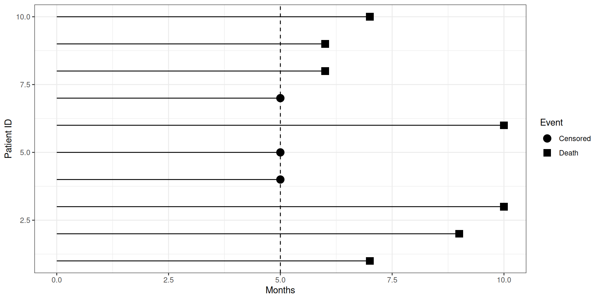
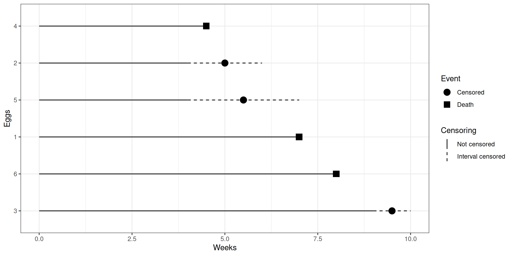
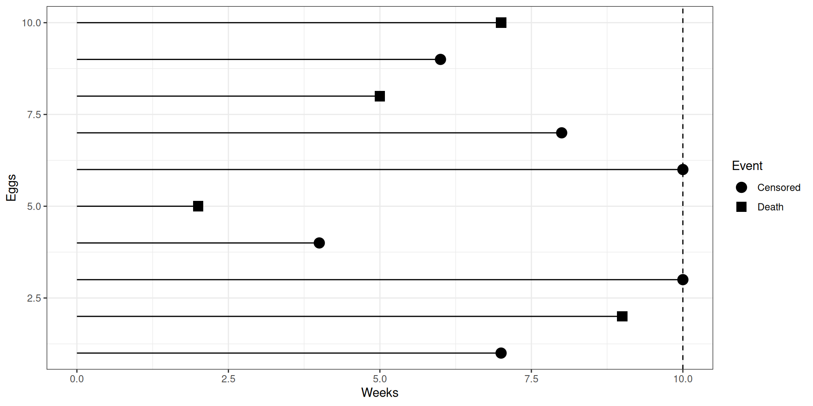
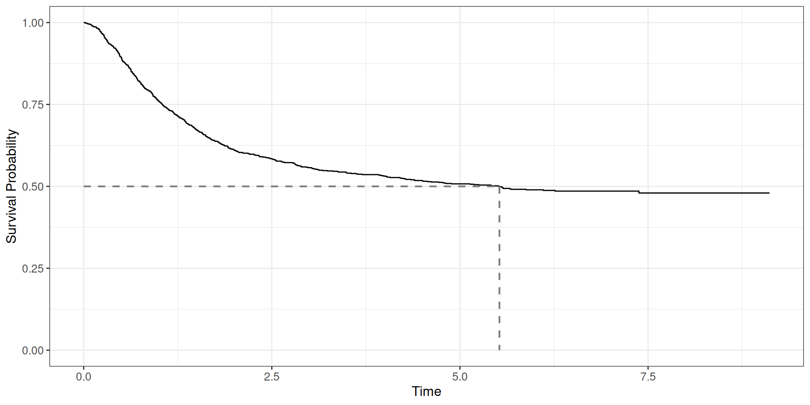
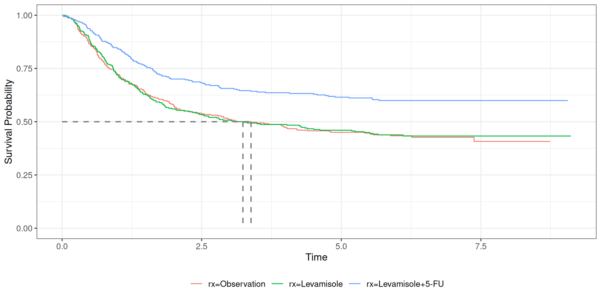

Survival Analysis is a set of tools to analyze time-to-event data. This leads to the survival rate which models the time to percentage of data to observe the event.
We are interested in how long do bird eggs hatch since being laid
Determine the hatch rate for each species
What happens when there is missing data?
Measure from first recording to event of interest
Construct a probability of surviving up to a certain time point
Data is typically recorded as time-to-event data
For biomedical studies, researchers are interested in time from diagnosis to death, known as time-to-death
Survival Functions
Censoring
Survival Rate
Example
The survival analysis functions are a set of models used to model time-to-event data.
The survival function models the probability of observing the event after a certain time point.
\[ S(t) = 1 - F(t) = \int^\infty_t f(x) dx \]
The hazard function is the probability of observing an event in the next moment, given you survived thus far.
\[ h(t) = \lim_{\Delta \rightarrow 0}\frac{P(t < X < t+\Delta|X = t)}{\Delta} \] ## Cumulative Hazard Function
The cumulative hazard function demonstrate how much hazard is accumulated after a certain amount of time.
\[ H(t) = \int^t_0 h(x) dx \]
All the survival functions are mathematically equivalent to each other.
Survival Functions
Censoring
Survival Rate
Example
Censoring is a mechanism where we do not observe the true time-to-event
Not all the time is observed
Three common types of censoring mechanisms: Right, Left, and Interval
You design a study where you want to record the time it takes for an egg to hatch for different species of birds.
You spend a week monitoring different bird nests and record times when eggs are laid.
The day before the eggs hatched, your boat broke down and were not able to go to the islands for a week due to repairs.
During this time, 5 eggs hatched!

library(ggplot2)
dat <- data.frame(ID = 1:10,
t1 = c(7, 9, 10, 5, 5, 10, 5, 6, 6, 7) ,
censored = c(1, 1, 1, 0, 0, 1, 0, 1, 1, 1))
ggplot(dat, aes(x = ID, y = t1, shape = ifelse(censored, "Death", "Censored"))) + geom_point(size = 4) +
geom_linerange(aes(ymin = 0, ymax = t1)) +
geom_hline(yintercept = 5, lty = 2) +
coord_flip() +
scale_shape_manual(name = "Event", values = c(19, 15)) +
# ggtitle("Left Censoring") +
xlab("Patient ID") + ylab("Months") +
theme_bw()As you been going out to the islands each day to record whether eggs have hatched or not, you can’t travel to the islands for the next few days due to stormy weather.
During this time, 8 eggs hatched!

library(ggplot2)
dat <- structure(list(ID = 1:6,
eventA = c(0L, 1L, 1L, 0L, 1L, 0L),
eventB = c(1L, 0L, 0L, 1L, 0L, 1L),
t1 = c(7, 4, 9, 4.5, 4, 8),
t2 = c(7, 6, 10, 4.5, 7, 8),
censored = c(0, 1, 1, 0, 1, 0)),
.Names = c("ID", "eventA", "eventB", "t1", "t2", "censored"),
class = "data.frame", row.names = c(NA, -6L))
dat$event <- with(dat, ifelse(eventA, "Censored", "Death"))
dat$id.ordered <- factor(x = dat$ID, levels = order(dat$t2, decreasing = T))
ggplot(dat, aes(x = id.ordered)) +
geom_linerange(aes(ymin = 0, ymax = t1)) +
geom_linerange(aes(ymin = t1, ymax = t2,
linetype = as.factor(censored))) +
geom_point(aes(y = ifelse(censored,
t1 + (t2 - t1) / 2, t2),
shape = event), size = 4) +
coord_flip() +
scale_linetype_manual(name = "Censoring", values = c(1, 2),
labels = c("Not censored", "Interval censored")) +
scale_shape_manual(name = "Event", values = c(19, 15)) +
# ggtitle("Interval Censoring") +
xlab("Eggs") + ylab("Weeks") +
theme_bw()It is the end of the study, and their are 5 more eggs that have not hatched yet!
Additionally, a colleague has informed you that some eggs were eaten by reptiles through out the study. They obtained the day they were eaten or lost.

library(ggplot2)
dat <- data.frame(ID = 1:10,
t1 = c(7, 9, 10, 4, 2, 10, 8, 5, 6, 7) ,
censored = c(0, 1, 0, 0, 1, 0, 0, 1, 0, 1))
ggplot(dat, aes(x = ID, y = t1,
shape = ifelse(censored, "Death", "Censored"))) +
geom_point(size = 4) +
geom_linerange(aes(ymin = 0, ymax = t1)) +
geom_hline(yintercept = 10, lty = 2) +
coord_flip() +
scale_shape_manual(name = "Event", values = c(19, 15)) +
# ggtitle("Right Censoring") +
xlab("Patient ID") + ylab("Months") +
theme_bw()Censoring affects the time-to-event information
However, we obtain some information when data is censored
Incorporate methods to utilize partial information
Censoring is independent of time-to-event generation
Survival Functions
Censoring
Survival Rate
Example
The survival curve will determine what is the probability of surviving up to a certain time
A survival curve accounts for both censored and uncensored data
A survival curve can be used to determine the median survival time of a disease
Let \(\{t_j,d_j,R_j\}^D_{j=1}\) denote the survival data, where \(t_1<t_2<\cdots<t_D\) are the ordered distinct observed event times, \(d_j\) represents the number of events at time point \(t_j\), and \(R_j\) denotes the number of subjects still at risk of experiencing the event at \(t_j\).
\[ \hat{S}(t) =\left\{\begin{array}{cc} 1 & t=0 \\ \prod_{i:t_j \le t} \left( 1 - \frac{d_j}{R_j} \right) & t_j < t \end{array}\right. \]
\[ \widehat{SE}\{\hat S(t)\}=\sqrt{\hat S^2(t)\sum_{t_j\leq t}\frac{d_j}{R_j(R_j-d_j)}}. \]
Survival Functions
Censoring
Survival Rate
Example
The survival package contains the necessary functions to fit a model:
Surv: Creates an outcome variablesurvfit: Fits the survival functionThe ggsurvfit package provides a set of tools to plot the survival function in a ggplot format. The primary functions are:
ggsurvfit: Plots Survival Function
add_quantile: Adds line on the percentile
add_confidence_interval: Adds pointwise error bars to the plot.
df_colon from the ggsurvfit package.time: time-to-deathstatus: censoring status
df_colon, stratified by treatment regimentime: time-to-deathstatus: censoring statusrx: treatment regimen